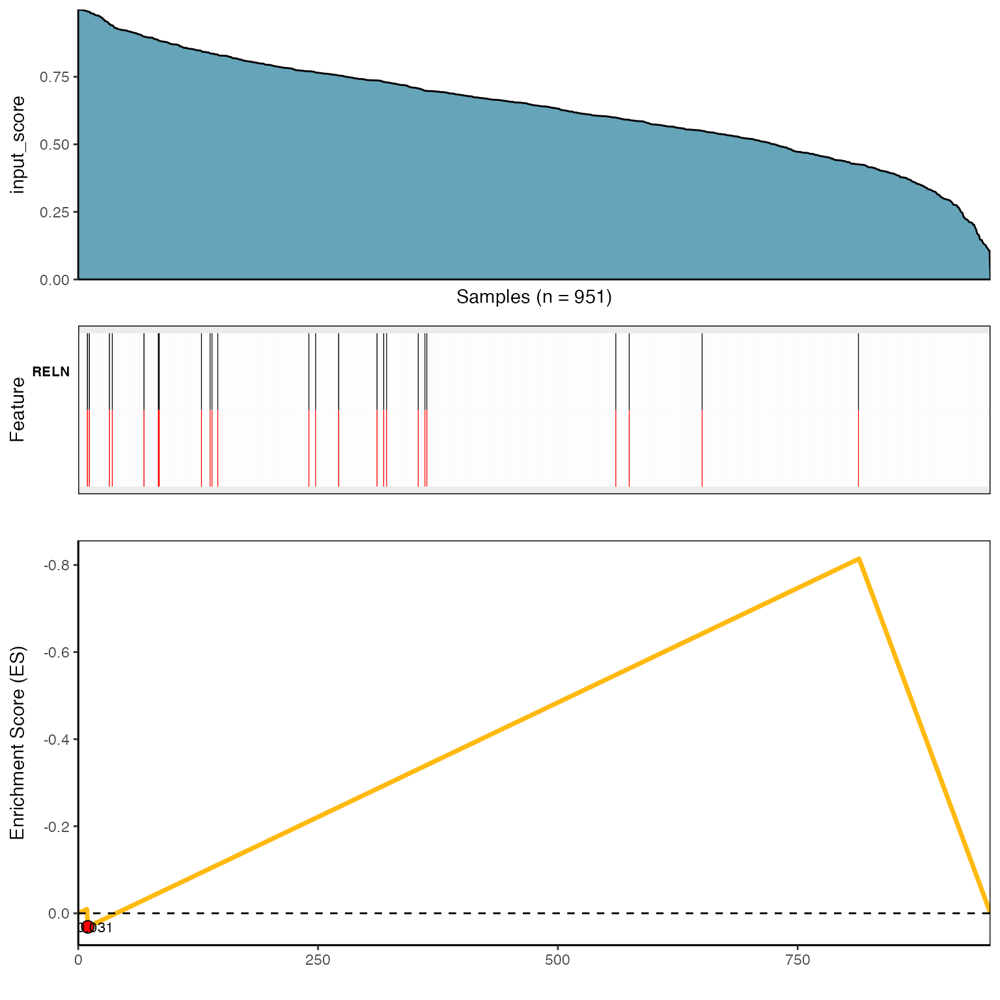
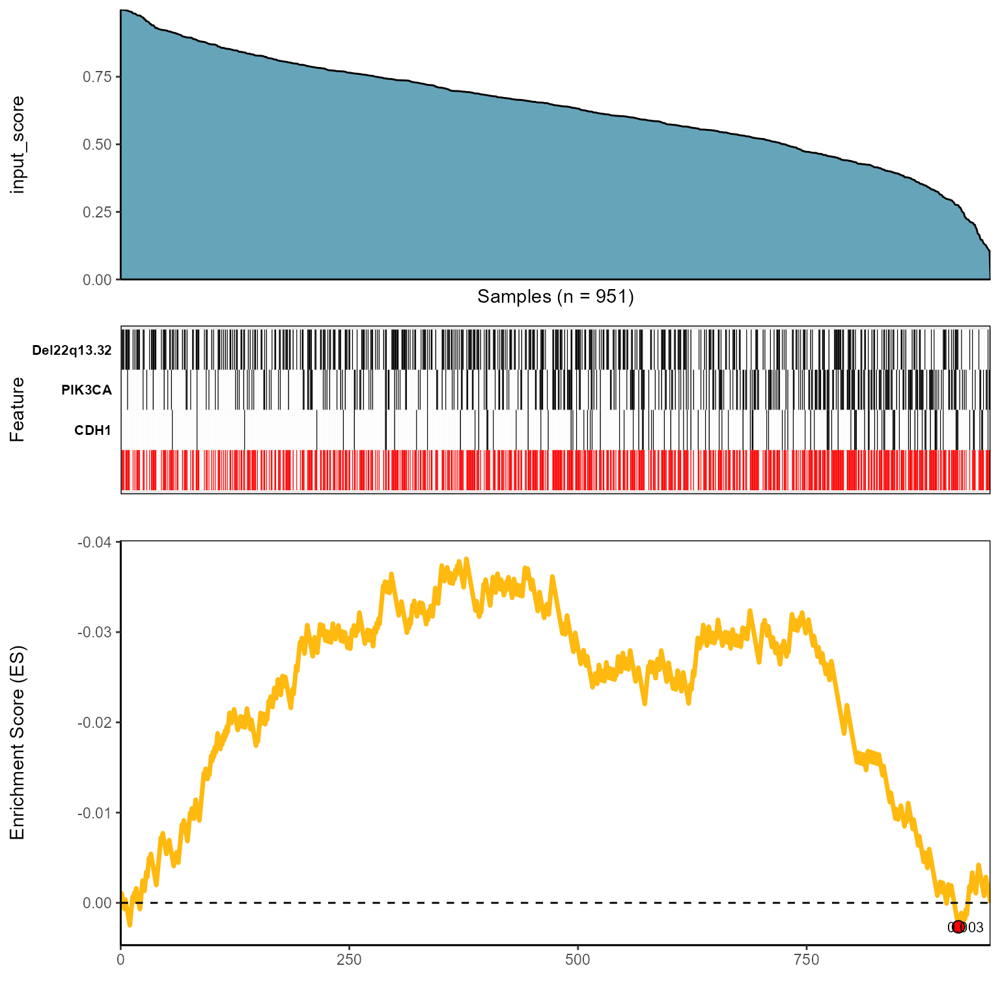
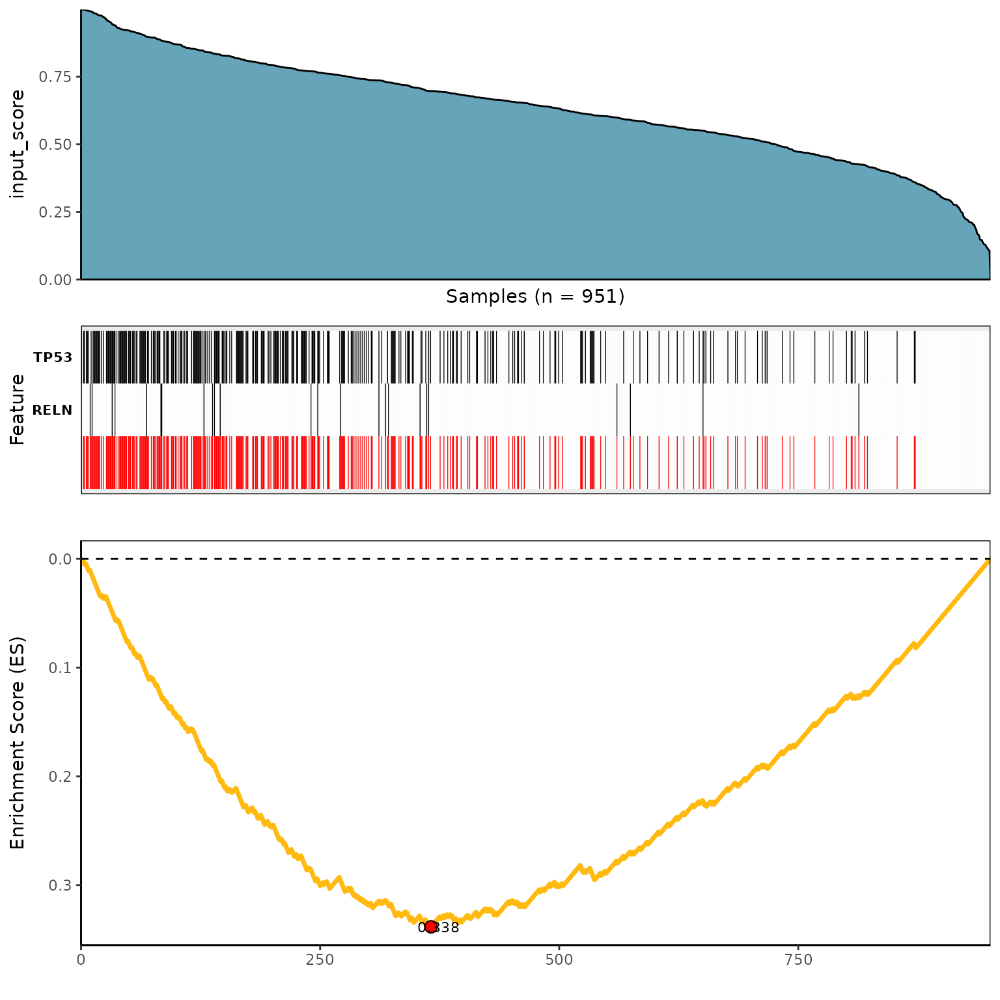

In CaDrA package, there are four scoring functions that were implemented to search for relevant subsets of genomic features that are likely associated with a specific outcome of interest (i.e. input_score):
- Kolmogorov-Smirnov Method (
ks) - Conditional Mutual Information Method (
revealer) - Wilcoxon Rank-Sum Method (
wilcox) - Custom-Defined Scoring Function (
custom)
Important Note:
- To search for best meta-features over top N starting seed features, see
?topn_eval() - To evaluate with a specific starting seed feature of interest, see
?candidate_search()
Here, we test and evaluate top 7 starting seed features using four scoring methods mentioned above.
Load required datasets
- A
binary features matrix(such as somatic mutations, copy number alterations, chromosomal translocations, etc.). The 1/0 vectors indicating the presence/absence of ‘omics’ features in the samples. Thefeaturesmatrix must be an object of class ExpressionSet from Biobase package) - A vector of continuous scores (or
input_score) represents a functional response of interest (such as protein expression, pathway activity, etc.)
# Load pre-simulated dataset
# See ?sim.ES for more information
data(sim.ES)
ES = sim.ES
# Generate a vector of sample-specific scores representing a target profile of interest
set.seed(123) # set seed
input_score = rnorm(n = ncol(sim.ES)) # generate random scores
names(input_score) = colnames(sim.ES) # label input_score with names similar to colnames of sim.ES1. Kolmogorov-Smirnov scoring method
See ?ks_genescore_mat for more details
ks_topn_l <- CaDrA::topn_eval(
ES = ES,
input_score = input_score,
method = "ks", # Use Kolmogorow-Smirnow Scoring function
weights = NULL, # If weights is provided, it will be used to perform a weighted-KS test
alternative = "less", # one-sided p-value
metric = "pval", # Use p-value to score features
top_N = 7, # Evaluate top 7 starting points for the search
max_size = 10, # Set max_size = 10 to account for 10 left-skewed features in sim.ES
do_plot = FALSE, # We will plot it AFTER finding the best hits
best_score_only = FALSE # If best_score_only = FALSE, it will return ESet, its corresponding
# best score, and input_score for over 7 feature searches
)
# Now we can fetch the ESet and feature that corresponded to the best score over the top N search
ks_topn_best_meta <- topn_best(ks_topn_l)
# Visualize best meta-features result
meta_plot(topn_best_list = ks_topn_best_meta)
2. Wilcoxon Rank-Sum scoring method
See ?wilcox_genescore_mat for more details
wilcox_topn_l <- CaDrA::topn_eval(
ES = ES,
input_score = input_score,
method = "wilcox", # Use Wilcoxon Rank-Sum scoring function
alternative = "less", # one-sided p-value
metric = "pval", # Use p-value to score features
top_N = 7, # Evaluate top 7 starting points for the search
max_size = 10, # Set max_size = 10 to account for 10 left-skewed features in sim.ES
do_plot = FALSE, # We will plot it AFTER finding the best hits
best_score_only = FALSE # If best_score_only = FALSE, it will return ESet, its corresponding
# best score, and input_score for over 7 feature searches
)
# Now we can fetch the ESet and feature that corresponded to the best score over the top N search
wilcox_topn_best_meta <- topn_best(wilcox_topn_l)
# Visualize best meta-features result
meta_plot(topn_best_list = wilcox_topn_best_meta)
3. Conditional Mutual Information scoring method
See ?revealer_genescore_mat for more details
revealer_topn_l <- CaDrA::topn_eval(
ES = ES,
input_score = input_score,
method = "revealer", # Use REVEALER's CMI scoring function
target_match = "positive", # A direction of target matching. "positive" for higher values
metric = "stat", # Use score statistics to score features
top_N = 7, # Evaluate top 7 starting points for the search
max_size = 10, # Set max_size = 10 to account for 10 left-skewed features in sim.ES
do_plot = FALSE, # We will plot it AFTER finding the best hits
best_score_only = FALSE # If best_score_only = FALSE, it will return ESet, its corresponding
# best score, and input_score for over 7 feature searches
)
# Now we can fetch the ESet and feature that corresponded to the best score over the top N search
revealer_topn_best_meta <- topn_best(revealer_topn_l)
# Visualize best meta-features result
meta_plot(topn_best_list = revealer_topn_best_meta)
4. Custom-Defined scoring method
See ?custom_genescore_mat for more details
# A customized function using ks-test function
customized_genescore_mat <- function(mat, input_score, alternative){
result <- 1:nrow(mat) %>%
purrr::map_dfr(
function(r){
feature = mat[r,];
x = input_score[which(feature==1)]; y = input_score[which(feature==0)];
res <- ks.test(x, y, alternative=alternative)
return(data.frame(score=res$statistic, p_value=res$p.value))
})
}
# Search for best features using a custom-defined function
custom_topn_l <- CaDrA::topn_eval(
ES = ES,
input_score = input_score,
custom_function = customized_genescore_mat, # Use customized function
custom_parameters = list(alternative = "less"), # Additional parameters to pass to custom_function (i.e. other than ES and input_score)
metric = "pval", # Use pval to score features
top_N = 7, # Evaluate top 7 starting points for the search
max_size = 10, # Set max_size = 10 to account for 10 left-skewed features in sim.ES
do_plot = FALSE, # We will plot it AFTER finding the best hits
best_score_only = FALSE # If best_score_only = FALSE, it will return ESet, its corresponding
# best score, and input_score for over 7 feature searches
)
# Now we can fetch the ESet and feature that corresponded to the best score over the top N search
custom_topn_best_meta <- topn_best(custom_topn_l)
# Visualize best meta-features result
meta_plot(topn_best_list = custom_topn_best_meta)